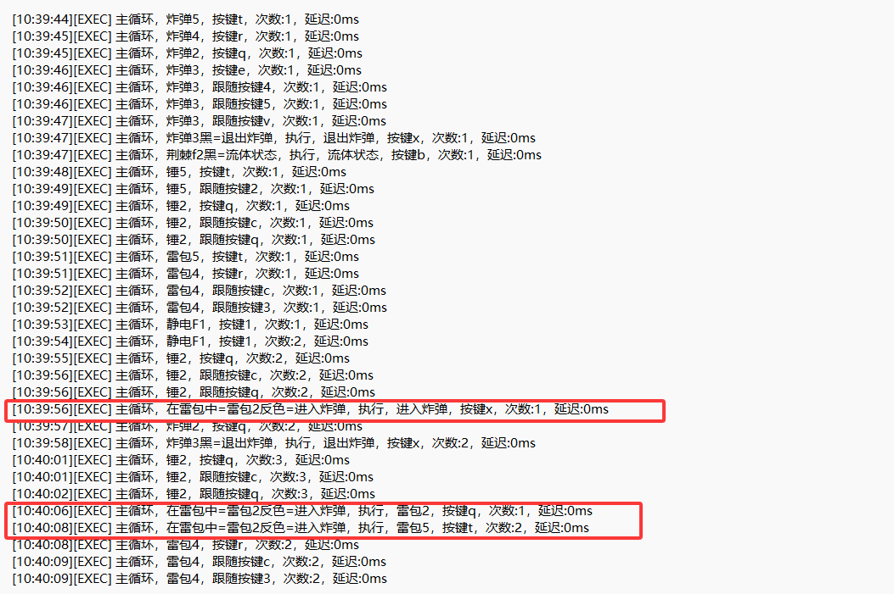

请教一个流金进入炸弹包的问题
贴一个循环先，
|炸弹5，炸弹4，炸弹2，炸弹3，炸弹3黑=退出炸弹，荆棘f2黑=流体状态，锤5，锤2，雷包2，雷包5，雷包4，在雷包中=雷包2反色=进入炸弹，静电F1，普攻||
炸弹5,t,500|炸弹4,r,500|炸弹2,q,500|炸弹3,e,500,4,1,5,640,v,400|炸弹3黑|退出炸弹,x,100|荆棘f2黑|流体状态,b,650|锤5,t,560,2,800|锤2,q,550,c,100,q,660|雷包2,q,660|雷包5,t,680|雷包4,r,680,c,100,3,1000|在雷包中|雷包2反色|进入炸弹,x,150,,,,,,,,,,,,,,,,,,1,20000,0|静电F1,1,500|普攻,`,20
[&DQMGOyYvSzoqD4QABwGVAYYABwEmAQAAex2JAQAAAAAAAAAAAAAAAAAAAAABMwAA]
要达到效果是锤2-手雷包2-进炸弹包，执行时第一次实现了（10:39:56），后续两次条件判断成功，但是没有执行进入炸弹包，执行了雷包2和雷包5是为啥

评论列表（12）
给炸弹包加内置CD9秒，可以多毛一个炸弹2
@纸 锤2=1=进手雷包
@纸 一下就通了！
你的按键需要猜，职业F234跟进入退出双包，就这么看你循环谁能看得出来
@KTV 跟按键没有关系，看日志判断条件就行了，只判断一次，第二次不判断了
“要达到效果是锤2-手雷包2-进炸弹包，执行时第一次实现了（10:39:56），后续两次条件判断成功，但是没有执行进入炸弹包，执行了雷包2和雷包5是为啥” 重点就这一句话和下面框起来的两条日志
@asaki 大锤共生我早就调通了，手雷/炸弹不用退出再进。你既然就关注你那两行日志，那你慢慢脑补吧。
AHK没执行就是没触发，我也懒得看你那堆跟随条件
@KTV 你懒得看就别回复呗，这是双螺旋的，共生早就通了。看看你楼上啥叫有效回复
建议不要使用判断雷包的条件进入雷包
而是用锤2，跟随按键进入雷包
例如 锤2 跟随进入雷包，跟随雷包2 这样省去了 雷包取色 以及 雷包2的取色。
@melis 已经设置了跟随，但是两种情况：
1.锤2——手雷包2——手雷包5——手雷包4
2.锤2——手雷包2——炸弹包2
两种情况怎么判断呢
@asaki 新手不建议2包一起切，之前已经写过循环，炸弹包是内置20秒cd，也就是当炸弹包cd可用的时候，也不会触发，而是每隔20秒才会进入.
锤2-进入雷包-手雷2，雷包4，雷包5
进入炸弹 内置20秒cd，跟随5，炸弹4，炸弹3，炸弹2
你判断不出来是因为，进入雷包的延迟是浮动的，你延迟设置太低，会导致跟随不成功。
最简单的就是，锤5 延迟550，进入雷包300，雷2 750，这样的跟随，100%会成功，然后剩下的就直接判断雷4，雷5
@melis 懂了，之前一直纠结判断不成功的问题，想实现的是锤2跟随手雷2，在雷包中优先级是手雷5>手雷4>进炸弹包，没用进炸弹内置cd20秒是因为少打一个炸弹2，这两天一直纠结双包的问题，试了下楼上兄弟设置9秒内置cd就好了！
谢谢大佬们的解惑！
又回看了下日志，第二次进入炸弹的条件没有识别成功，正常10:40:02就应该识别进入炸弹了，但是没成功不明白是为啥